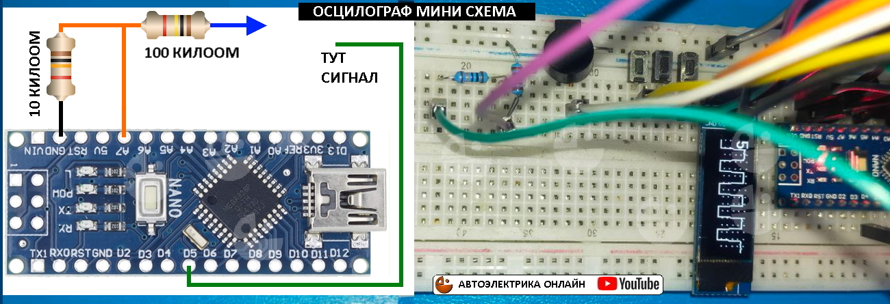

Пошаговая сборка контрольки
Начинем с платы ардуино. Первый шаг.

Итак у нас плата ардуино нано, для первоначальной сборки рекомендую использовать беспаечную макетную плату, но если ее нет первый шаг делаем без нее. Подключаем ардуино нано к компьютеру, для этого необходимо установить программу ардуино иде рекомендую 1.8.16 как самую простую и проверенную, установить драйвер ардуино если необходимо, далее загружаете в ардуино пример из программы называется "блинк" (мигание встроенным в плату светодиодом), затем меняете в примере цифру 1000 на любую например 500 - снова загружаете и смотрите что поменялось. Если все работает плата подключилась и получилось загрузить и изменить мигание то очень хорошо, вы молодцы, первый шаг пройден. Для информации можно посмотреть ролики на Ютуб, так и пишите "блинк ардуино" или "ардуино первое знакомство" и информации будет достаточно.
Подключаем дисплей
Второй шаг

Для подключения используем беспаечную макетную плату и четыре соеденительнх провода, дисплей у нас подключается по шине I2C (айтуси), это самое простое подключение дисплеев. После подключения дисплей останется черным, необходимо установить библиотеку и задать что нибудь вывести на экран. Библиотека это просто папка с файлами ее нужно закинуть в C:\Program Files (x86)\Arduino\libraries и перезагрузить ардуино иде, не советую устанавливать библиотеки другим образом и в другие папки, это самый надежный и провереный метод. Далее заливаем в ардуино прошивку вот эту и смотрим что произошло.
// НАЧАЛО КОДА, КОПИРУЕМ ОТСЮДА И ДО НИЗА НЕ ПРОПУСКАЯ НИЧЕГО
#include "U8g2lib.h" // подключаем библиотеку дисплея
// вводим марку дисплея, длинная строка ниже
U8G2_SSD1306_128X32_UNIVISION_F_HW_I2C u8g2(U8G2_R0, /* reset=*/ U8X8_PIN_NONE, /* clock=*/ SCL, /* data=*/ SDA);
void setup() { // Однократное использование кода
u8g2.begin(); // Инициализируем дисплей
u8g2.firstPage(); // Очищаем дислей
u8g2.setFont(u8g2_font_10x20_mr); // Выставляем шрифт
u8g2.setCursor(0, 13); // Указываем где на дисплее показать (ширина, высота)
u8g2.print("PRIVET"); // текст для вывода
u8g2.setCursor(12, 32); // Указываем где на дисплее показать (ширина, высота)
u8g2.print("MEDVED"); // текст для вывода
u8g2.sendBuffer(); // Отсылаем данные на дисплей
}
void loop() { // Многократное использование кода (цикл), пока не используем.
}
// КОНЕЦ КОДА, КОПИРУЕМ ДО СЮДА КОД МОЖНО С ЭТОЙ НАДПИСЬЮ
После заливки кода в ардуино на дисплее мы увидим надпись, найдите эту надпись в коде и поменяйте, чтоб на дисплее выводилось то что вы хотите. Еси у вас ошибки вышли то возможно не установилась библиотека либы вы не прошли первый шаг описанный выше.
Сборка на плате.
Можно при желании начать паять на односторонней макетной плате для пайки, на этой плате потихоньку соберем контрольку. Сейчас мы просто припаяли дисплей и ардуино, дальше припаяем кнопки и пр. Соединять дорожки советую жилой от витой пары (провод интернета), так же можно использовать жилы многожильного провода, нагрузки мизерные так что любая толщина подойдет , лишь бы в руках держать можно было.
Подключаем кнопки
Третий шаг

Давайте подключим кнопки(ДИСПЛЕЙ НЕ ОТКЛЮЧАЕМ) и попробуем с помощью нажатий на них изменять то что появляется а экране. Кнопки подключаются одним контактом к минусу , а вторым к пинам которые запрограммированы на подачу плюса на кнопку, плюс подается слабый и при нажатии на кнопку он превращается в минус, ардуинка это замечает и выполняет нужную команду. При загрузке скетча мы видим на экране одну надпись, при нажатии кнопок она меняется в другую надпись в круг или диск.
// НАЧАЛО КОДА, КОПИРУЕМ ОТСЮДА И ДО НИЗА НЕ ПРОПУСКАЯ НИЧЕГО
#include "U8g2lib.h" // подключаем библиотеку дисплея
// вводим марку дисплея, длинная строка ниже
U8G2_SSD1306_128X32_UNIVISION_F_HW_I2C u8g2(U8G2_R0, /* reset=*/ U8X8_PIN_NONE, /* clock=*/ SCL, /* data=*/ SDA);
void setup() { // Однократное использование кода
pinMode(A0, INPUT_PULLUP); // 1 кнопка, настраиваем пин А0 с подачей плюса изнутри мк
pinMode(A1, INPUT_PULLUP); // 2 кнопка, настраиваем пин А1 с подачей плюса изнутри мк
pinMode(12, INPUT_PULLUP); // 3 кнопка, настраиваем пин 12 с подачей плюса изнутри мк
u8g2.begin(); // Инициализируем дисплей
u8g2.setFont(u8g2_font_10x20_mr); // Выставляем шрифт
u8g2.setCursor(0, 13); // Указываем где на дисплее показать (ширина, высота)
u8g2.print("PRIVET"); // текст для вывода
u8g2.sendBuffer(); // Отсылаем данные на дисплей
}
void loop() { // Многократное использование кода (цикл).
if (digitalRead(A0) == 0) { // 1 кнопка, если на пине кнопке ноль то делаем то что в скобках
u8g2.firstPage(); // Очищаем дислей
u8g2.setFont(u8g2_font_10x20_mr); // Выставляем шрифт
u8g2.setCursor(0, 13); // Указываем где на дисплее показать (ширина, высота)
u8g2.print("MEDVED"); // текст для вывода
u8g2.sendBuffer(); // Отсылаем данные на дисплей
delay(500); // задержка чтоб кнопка сработала однократно
}
if (digitalRead(A1) == 0) { // 2 кнопка, если на пине кнопке ноль то делаем то что в скобках
u8g2.firstPage(); // Очищаем дислей
u8g2.drawCircle(90, 15, 15, U8G2_DRAW_ALL); // рисуем круг (место на экране,,размер)
u8g2.sendBuffer(); // Отсылаем данные на дисплей
delay(500); // задержка чтоб кнопка сработала однократно
}
if (digitalRead(12) == 0) { // 3 кнопка, если на пине кнопке ноль то делаем то что в скобках
u8g2.firstPage(); // Очищаем дислей
u8g2.drawDisc(35, 15, 15, U8G2_DRAW_ALL); // рисуем диск (место на экране,,размер)
u8g2.sendBuffer(); // Отсылаем данные на дисплей
delay(500); // задержка чтоб кнопка сработала однократно
}
}
// КОНЕЦ КОДА, КОПИРУЕМ ДО СЮДА КОД МОЖНО С ЭТОЙ НАДПИСЬЮ
После того как у вас все получилось то поменяйте надписи, размеры и место круга и диска. На макетной плате обращайте внимание на то что кнопки оним выводом сидят на общем контакте который подключен к GND.
Сборка на плате.

Добавляем кнопки к нашей плате, если ножки кнопок не влезают в отверстия платы то подпиливаем надфилем эти ножки, можно конечно рассверлить плату но часто при этом отрывается контакт от макетки и кнопку становится не к чему паять.
Подключаем бипер
Четвертый шаг

Подключаем бипер (пищалка) , бипер должен быть неактивный с сопротивлением от 10 до 30 ом примерно, активный тоже работать будет но звучание у него очень плохое без тональностей. Одним контактом бипер подключаем к А2 пину, а вторым к GND. После загрузки скетча проиграет мелодия, и потом нажимая кнопки будет раздаватся писк разной тональностью и длительностью.
// НАЧАЛО КОДА, КОПИРУЕМ ОТСЮДА И ДО НИЗА НЕ ПРОПУСКАЯ НИЧЕГО
#include "U8g2lib.h" // подключаем библиотеку дисплея
// вводим марку дисплея, длинная строка ниже
U8G2_SSD1306_128X32_UNIVISION_F_HW_I2C u8g2(U8G2_R0, /* reset=*/ U8X8_PIN_NONE, /* clock=*/ SCL, /* data=*/ SDA);
void setup() { // Однократное использование кода
pinMode(A0, INPUT_PULLUP); // 1 кнопка, настраиваем пин А0 с подачей плюса изнутри мк
pinMode(A1, INPUT_PULLUP); // 2 кнопка, настраиваем пин А1 с подачей плюса изнутри мк
pinMode(12, INPUT_PULLUP); // 3 кнопка, настраиваем пин 12 с подачей плюса изнутри мк
u8g2.begin(); // Инициализируем дисплей
u8g2.setFont(u8g2_font_10x20_mr); // Выставляем шрифт
u8g2.setCursor(0, 13); // Указываем где на дисплее показать (ширина, высота)
u8g2.print("PRIVET"); // текст для вывода
u8g2.sendBuffer(); // Отсылаем данные на дисплей
tone(A2, 349, 204.54525); // Проигрываем мелодию
delay(227.2725);
tone(A2, 349, 204.54525); // пищим на пине а2, с частотой в герцах, и длительностью в милисекундах
delay(227.2725); // задержка ( ) милисекунд
tone(A2, 349, 102.272625);
delay(113.63625);
tone(A2, 391, 102.272625);
delay(113.63625);
tone(A2, 329, 204.54525);
delay(227.2725);
tone(A2, 329, 204.54525);
delay(227.2725);
tone(A2, 293, 102.272625);
delay(113.63625);
tone(A2, 261, 102.272625);
delay(113.63625);
tone(A2, 293, 306.817875); // конец мелодии
}
void loop() { // Многократное использование кода (цикл).
if (digitalRead(A0) == 0) { // 1 кнопка, если на пине кнопке ноль то делаем то что в скобках
tone(A2, 500, 250); // пищим на пине а2, с частотой 500герц, и 250 милисекунд
u8g2.firstPage(); // Очищаем дислей
u8g2.setFont(u8g2_font_10x20_mr); // Выставляем шрифт
u8g2.setCursor(0, 13); // Указываем где на дисплее показать (ширина, высота)
u8g2.print("MEDVED"); // текст для вывода
u8g2.sendBuffer(); // Отсылаем данные на дисплей
delay(500); // задержка 500 милисекунд чтоб кнопка сработала однократно
}
if (digitalRead(A1) == 0) { // 2 кнопка, если на пине кнопке ноль то делаем то что в скобках
tone(A2, 1000, 500); // пищим на пине а2, с частотой 1000герц, и 500 милисекунд
u8g2.firstPage(); // Очищаем дислей
u8g2.drawCircle(90, 15, 15, U8G2_DRAW_ALL); // рисуем круг (место на экране,,размер)
u8g2.sendBuffer(); // Отсылаем данные на дисплей
delay(500); // задержка 500 милисекунд чтоб кнопка сработала однократно
}
if (digitalRead(12) == 0) { // 3 кнопка, если на пине кнопке ноль то делаем то что в скобках
tone(A2, 1500, 750); // пищим на пине а2, с частотой 1500герц, и 750 милисекунд
u8g2.firstPage(); // Очищаем дислей
u8g2.drawDisc(35, 15, 15, U8G2_DRAW_ALL); // рисуем диск (место на экране,,размер)
u8g2.sendBuffer(); // Отсылаем данные на дисплей
delay(500); // задержка 500 милисекунд чтоб кнопка сработала однократно
}
}
// КОНЕЦ КОДА, КОПИРУЕМ ДО СЮДА КОД МОЖНО С ЭТОЙ НАДПИСЬЮ
После того как у вас все получилось то поменяйте для интереса длительность и тональность на кнопках, а так же можете что либо поменять и в мелодии. При подключении пищалки смотрите чтоб GND точно приходил, там на макетке длинный контакт промаркированный синним посередине размыкается, будте внимательны.
Сборка на плате.
Добавляем на плату пищалку, часто у бипера не совпадают ножки с отверстиями, просто сверлим плату где удобнее и ножки соединяем как на рисунке.
Делаем вольтметр и осцилограф
Пятый шаг
Давайте сделаем вольтметр и осцилограф, звучит страшно но нам понадобится для этого всего две детали резмстор на 10 килоом и резистор 100 килоом, с их помощю мы 5 вольт которые использует ардуино разделим на 10 и получится что мы можем измерять напряжение до 50 вольт, а если у вас нет резисторов то можете подавать напряжение прямо на А7 пин напрямую но только до 5 вольт. После заливаете скетч который ниже и при включении увидите вольтметр, 1 кнопкой можно переходить по меню из двух вариантов , если остановится и подождать то войдете в функцию, в вольтметре никаких настроек нет, а в осцилографе 2 кнопкой переключаются пределы измерений 5, 15, 25, 35 вольт. Кнопкой 3 можно включить на 30 секунд тестовый генератор а пине 5 и если вы туда подключите провод с резисторов то увидите прямоугольные импульсы на осцилографе частотой 250 герц как на фото, в вольтметре будут скакать показания. Настроить точность вольтметра можно в скетче в функции вольтметр в самом низу, там я подпишу крупными буквами.
// НАЧАЛО КОДА, КОПИРУЕМ ОТСЮДА И ДО НИЗА НЕ ПРОПУСКАЯ НИЧЕГО
#include "U8g2lib.h"
U8G2_SSD1306_128X32_UNIVISION_F_HW_I2C u8g2(U8G2_R0, /* reset=*/ U8X8_PIN_NONE, /* clock=*/ SCL, /* data=*/ SDA);
byte buffer[128]; // буфер для осциллографа
unsigned long timer; // переменная для таймера
boolean u = 0; // вход - запрет в главное меню
boolean r = 0; // быстрый - медленный вход в функцию
byte q = 1; // счетчик перемещения по меню
byte e = 0; // хранилище номера функции на быстром входе
byte m = 5; // вольты на осцилографе
int w = 100; // высота осциллографа
int Htime = 0; // вольтметр
int Ltime = 0; // вольтметр
float Ttime; // вольтметр
void setup() { ///////////// Н А С Т Р О Й К А (сетап) /////////////////
pinMode(A7, INPUT); // пин а7 вольтметр и осцилограф
pinMode(12, INPUT_PULLUP); // 3 кнопка
pinMode(A1, INPUT_PULLUP); // 2 кнопка
pinMode(A0, INPUT_PULLUP); // 1 кнопка
pinMode(A2, OUTPUT); // пин а0 пищалка
u8g2.begin(); // Инициализируем дисплей
u8g2.setFont(u8g2_font_10x20_mr); // Выставляем шрифт
}
void loop() { ////// Г Л А В Н Ы Й Ц И К Л П Р О Г Р А М М Ы ///////////////
if (digitalRead(A0) == 0) { ////// главное меню 1 кнопка перемещение вправо
u8g2.setFont(u8g2_font_10x20_mr);
u = 0;
r = 0;
e = 0;
timer = millis();
delay(300) ;
tone(A2, 500, 100);
q++; // прибавляем счетчик меню
if (q >= 3) q = 1; // меню возращаемся к 1 пункту
}
if (e == 3 && digitalRead(A1) == 0) { /// в режиме осциллограф 2 кнопка вольтаж
tone(A2, 700, 100);
m = m + 10;
if (m >= 36)m = 5;
if (m == 5 )w = 100;
if (m == 15)w = 300;
if (m == 25)w = 500;
if (m == 35)w = 700;
delay(500);
}
if (digitalRead(12) == 0 ) { /////// 3 кнопка подача тестового сигнала
tone(5, 250, 30000); // подача тестового сигнала 30 сек
}
if (u == 0 && q == 1 ) { /////////////////////// ВОЛЬТМЕР
u8g2.clearBuffer();
u8g2.setCursor(2, 13);
u8g2.print("VOLTMETER");
u8g2.drawCircle(5, 25, 5, U8G2_DRAW_ALL); // рисуем пустотелый круг
u8g2.drawCircle(24, 25, 5, U8G2_DRAW_ALL);
u8g2.drawDisc(5, 25, 3, U8G2_DRAW_ALL); // рисуем заполненный круг
u8g2.sendBuffer();
timer = millis();
u = 1;
r = 0;
}
if (u == 0 && q == 2 ) { ////////// ОСЦИЛОГРАФ
u8g2.clearBuffer();
u8g2.setCursor(0, 13);
u8g2.print("OSCILLOSCOPE");
u8g2.drawCircle(5, 25, 5, U8G2_DRAW_ALL);
u8g2.drawCircle(24, 25, 5, U8G2_DRAW_ALL);
u8g2.drawDisc(24, 25, 3, U8G2_DRAW_ALL);
u8g2.sendBuffer();
timer = millis();
u = 1;
r = 0;
}
if (r == 1 && e == 2) { ///////////// короткий путь до вольтметра
voltmetr();
}
if (millis() - timer > 3000 && q == 1 && r == 0) { //////// если выбран вольтметр
u8g2.clearBuffer();
u8g2.sendBuffer();
timer = millis();
voltmetr();
}
if (r == 1 && e == 3) { //////////////// короткий путь до осцилограф
oscilograf();
}
if (millis() - timer > 3000 && q == 2 && r == 0) { /////// если выбран осцилограф
u8g2.clearBuffer();
u8g2.sendBuffer();
timer = millis();
oscilograf();
}
}///////////////////////КОНЕЦ ГЛАВНОГО ЦИКЛА ПРОГРАММЫ //////////////////////////////
void voltmetr() { //////////// функция вольтметр
long sum = 0;
for (int i = 0; i < 50; i++) sum += analogRead(A7);
Htime = (sum / 50);
if (Htime >= Ltime + 2 || Htime <= Ltime - 2) {
Ltime = Htime;
}
Ttime = (55 / 1023.0) * Ltime;//НАСТРОЙКА ВОЛЬТМЕТРА МЕНЯЕТЕ 55 НА 53 ИЛИ 57 И СМОТРИТЕ
u8g2.firstPage();
u8g2.setFont(u8g2_font_10x20_mr);
u8g2.setCursor(0, 13);
u8g2.print("V");
u8g2.setFont(u8g2_font_fub30_t_symbol);
u8g2.setCursor(15, 32);
u8g2.print(Ttime);
u8g2.sendBuffer();
if (Ltime <= 3)Ltime = 0;
r = 1;
e = 2;
}
void oscilograf() { //////////// функция осцилограф
uint32_t start = micros();
for (uint8_t x = 0; x < 128; ++x) { // 128 размер буфера
buffer[x] = map(analogRead(A7), 0, w, u8g2.getDisplayHeight() - 1, 0); // а7 пин ацп
}
u8g2.firstPage();
do {
drawScreen(start);
} while (u8g2.nextPage());
r = 1;
e = 3;
}
void drawScreen(uint32_t duration) { // функция для работы осцилографа
for (int8_t v = 5; v >= 0; --v) {
uint8_t tickY = u8g2.getDisplayHeight() - u8g2.getDisplayHeight() * v / 5;
for (uint8_t x = 0; x < u8g2.getDisplayWidth(); x += 8)
u8g2.drawPixel(x, tickY);
}
for (uint8_t x = 1; x < 128; ++x) { // 128 размер буфера
u8g2.drawLine(x - 1, buffer[x - 1], x, buffer[x]);
}
u8g2.setCursor(0, 13);
u8g2.print(m);
}
// КОНЕЦ КОДА, КОПИРУЕМ ДО СЮДА КОД МОЖНО С ЭТОЙ НАДПИСЬЮ
Далее можете спаять контрольку и пользоватся этим минимальным набором.
Сборка на плате.

Попробуйте подавать с ардуино тестовый сигнал и 5 вольт, далее попробуйте подать с батарейки крона или блока питания 9 или 12 вольт питание. На иглу подаете + а минус на корпус разьема юсб или контакт gnd.